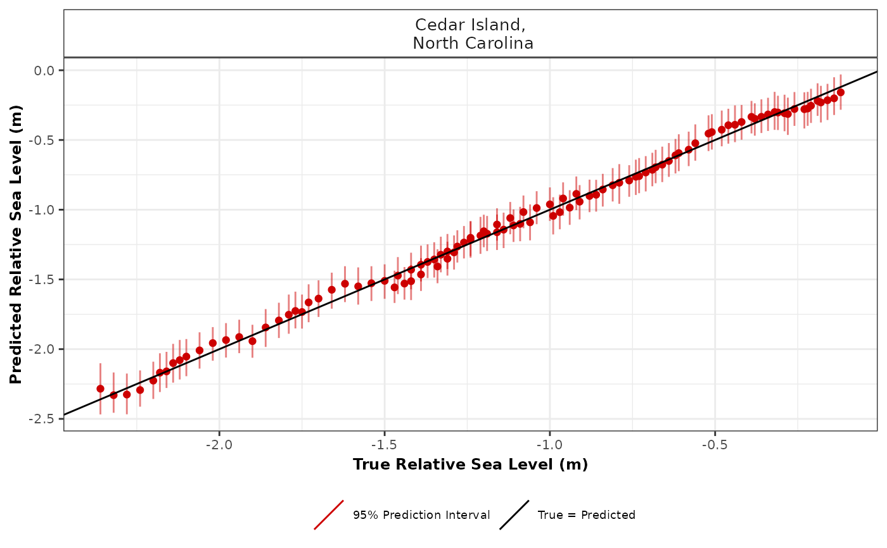

R/cross_val_check.R
cross_val_check.RdCross validation check for spline in time, spline in space time and GAM in order to select the most appropriate number of knots when creating basis functions.
cross_val_check(
data,
prediction_grid_res = 50,
spline_nseg = NULL,
spline_nseg_t = 20,
spline_nseg_st = 6,
n_iterations = 1000,
n_burnin = 100,
n_thin = 5,
n_chains = 2,
model_type,
n_fold = 5,
seed = NULL,
CI = 0.95
)Raw input data
Resolution of grid. Predictions over every 50 years(default) can vary based on user preference, as larger values will reduce computational run time.
This setting is focused on the Noisy Input Spline model. It provides the number of segments used to create basis functions.
This setting is focused on the Noisy Input Generalised Additive Model. It provides the number of segments used to create basis functions.
This setting is focused on the Noisy Input Generalised Additive Model. It provides the number of segments used to create basis functions.
Number of iterations. Increasing this value will increase the computational run time.
Size of burn-in. This number removes a certain number of samples at the beginning.
Amount of thinning.
Number of MCMC chains. The number of times the model will be run.
The user selects their statistical model type. The user can select a Noisy Input Spline in Time using "ni_spline_t". The user can select a Noisy Input Spline in Space Time using "ni_spline_st". The user can select a Noisy Input Generalised Additive Model using "ni_gam_decomp".
Number of folds required in the cross validation. The default is 5 fold cross validation.
If the user wants reproducible results, seed stores the output when random selection was used in the creation of the cross validation.
Size of the credible interval required by the user. The default is 0.95 corresponding to 95%.
A list containing the model comparison measures, e.g. Root Mean Square Error (RMSE), and plot of true vs predicted values
# \donttest{
data <- NAACproxydata %>% dplyr::filter(Site == "Cedar Island")
cross_val_check(data = data, model_type = "ni_spline_t",n_fold = 2)
#> module glm loaded
#> Compiling model graph
#> Resolving undeclared variables
#> Allocating nodes
#> Graph information:
#> Observed stochastic nodes: 52
#> Unobserved stochastic nodes: 15
#> Total graph size: 915
#>
#> Initializing model
#>
#> Compiling model graph
#> Resolving undeclared variables
#> Allocating nodes
#> Graph information:
#> Observed stochastic nodes: 52
#> Unobserved stochastic nodes: 121
#> Total graph size: 5460
#>
#> Initializing model
#>
#> No convergence issues detected.
#> Compiling model graph
#> Resolving undeclared variables
#> Allocating nodes
#> Graph information:
#> Observed stochastic nodes: 52
#> Unobserved stochastic nodes: 15
#> Total graph size: 915
#>
#> Initializing model
#>
#> Compiling model graph
#> Resolving undeclared variables
#> Allocating nodes
#> Graph information:
#> Observed stochastic nodes: 52
#> Unobserved stochastic nodes: 123
#> Total graph size: 5528
#>
#> Initializing model
#>
#> No convergence issues detected.
#> $ME_MAE_RSME_fold_site
#> # A tibble: 2 × 5
#> SiteName CV_fold_number RSME MAE ME
#> <fct> <fct> <dbl> <dbl> <dbl>
#> 1 "Cedar Island,\n North Carolina" 1 0.0191 0.0349 0.00265
#> 2 "Cedar Island,\n North Carolina" 2 0.0135 0.0336 -0.00188
#>
#> $ME_MAE_RSME_site
#> # A tibble: 1 × 4
#> SiteName RSME MAE ME
#> <fct> <dbl> <dbl> <dbl>
#> 1 "Cedar Island,\n North Carolina" 0.00394 0.0342 0.000386
#>
#> $ME_MAE_RSME_overall
#> RSME MAE ME
#> 1 0.003937084 0.0342196 0.0003860628
#>
#> $ME_MAE_RSME_fold
#> # A tibble: 2 × 4
#> CV_fold_number RSME MAE ME
#> <fct> <dbl> <dbl> <dbl>
#> 1 1 0.0191 0.0349 0.00265
#> 2 2 0.0135 0.0336 -0.00188
#>
#> $true_pred_plot

#>
#> $CV_model_df
#> Longitude Latitude SiteName data_type_id Age
#> 1 -76.38 34.971 Cedar Island,\n North Carolina ProxyRecord -800
#> 2 -76.38 34.971 Cedar Island,\n North Carolina ProxyRecord -731
#> 3 -76.38 34.971 Cedar Island,\n North Carolina ProxyRecord -525
#> 4 -76.38 34.971 Cedar Island,\n North Carolina ProxyRecord -333
#> 5 -76.38 34.971 Cedar Island,\n North Carolina ProxyRecord -211
#> 6 -76.38 34.971 Cedar Island,\n North Carolina ProxyRecord -174
#> 7 -76.38 34.971 Cedar Island,\n North Carolina ProxyRecord -143
#> 8 -76.38 34.971 Cedar Island,\n North Carolina ProxyRecord -112
#> 9 -76.38 34.971 Cedar Island,\n North Carolina ProxyRecord 100
#> 10 -76.38 34.971 Cedar Island,\n North Carolina ProxyRecord 153
#> 11 -76.38 34.971 Cedar Island,\n North Carolina ProxyRecord 229
#> 12 -76.38 34.971 Cedar Island,\n North Carolina ProxyRecord 278
#> 13 -76.38 34.971 Cedar Island,\n North Carolina ProxyRecord 381
#> 14 -76.38 34.971 Cedar Island,\n North Carolina ProxyRecord 505
#> 15 -76.38 34.971 Cedar Island,\n North Carolina ProxyRecord 572
#> 16 -76.38 34.971 Cedar Island,\n North Carolina ProxyRecord 604
#> 17 -76.38 34.971 Cedar Island,\n North Carolina ProxyRecord 605
#> 18 -76.38 34.971 Cedar Island,\n North Carolina ProxyRecord 625
#> 19 -76.38 34.971 Cedar Island,\n North Carolina ProxyRecord 672
#> 20 -76.38 34.971 Cedar Island,\n North Carolina ProxyRecord 725
#> 21 -76.38 34.971 Cedar Island,\n North Carolina ProxyRecord 745
#> 22 -76.38 34.971 Cedar Island,\n North Carolina ProxyRecord 818
#> 23 -76.38 34.971 Cedar Island,\n North Carolina ProxyRecord 825
#> 24 -76.38 34.971 Cedar Island,\n North Carolina ProxyRecord 895
#> 25 -76.38 34.971 Cedar Island,\n North Carolina ProxyRecord 941
#> 26 -76.38 34.971 Cedar Island,\n North Carolina ProxyRecord 983
#> 27 -76.38 34.971 Cedar Island,\n North Carolina ProxyRecord 1057
#> 28 -76.38 34.971 Cedar Island,\n North Carolina ProxyRecord 1082
#> 29 -76.38 34.971 Cedar Island,\n North Carolina ProxyRecord 1093
#> 30 -76.38 34.971 Cedar Island,\n North Carolina ProxyRecord 1159
#> 31 -76.38 34.971 Cedar Island,\n North Carolina ProxyRecord 1219
#> 32 -76.38 34.971 Cedar Island,\n North Carolina ProxyRecord 1267
#> 33 -76.38 34.971 Cedar Island,\n North Carolina ProxyRecord 1287
#> 34 -76.38 34.971 Cedar Island,\n North Carolina ProxyRecord 1322
#> 35 -76.38 34.971 Cedar Island,\n North Carolina ProxyRecord 1408
#> 36 -76.38 34.971 Cedar Island,\n North Carolina ProxyRecord 1468
#> 37 -76.38 34.971 Cedar Island,\n North Carolina ProxyRecord 1525
#> 38 -76.38 34.971 Cedar Island,\n North Carolina ProxyRecord 1603
#> 39 -76.38 34.971 Cedar Island,\n North Carolina ProxyRecord 1644
#> 40 -76.38 34.971 Cedar Island,\n North Carolina ProxyRecord 1669
#> 41 -76.38 34.971 Cedar Island,\n North Carolina ProxyRecord 1736
#> 42 -76.38 34.971 Cedar Island,\n North Carolina ProxyRecord 1846
#> 43 -76.38 34.971 Cedar Island,\n North Carolina ProxyRecord 1874
#> 44 -76.38 34.971 Cedar Island,\n North Carolina ProxyRecord 1913
#> 45 -76.38 34.971 Cedar Island,\n North Carolina ProxyRecord 1927
#> 46 -76.38 34.971 Cedar Island,\n North Carolina ProxyRecord 1930
#> 47 -76.38 34.971 Cedar Island,\n North Carolina ProxyRecord 1934
#> 48 -76.38 34.971 Cedar Island,\n North Carolina ProxyRecord 1937
#> 49 -76.38 34.971 Cedar Island,\n North Carolina ProxyRecord 1957
#> 50 -76.38 34.971 Cedar Island,\n North Carolina ProxyRecord 1963
#> 51 -76.38 34.971 Cedar Island,\n North Carolina ProxyRecord 1988
#> 52 -76.38 34.971 Cedar Island,\n North Carolina ProxyRecord 1996
#> 53 -76.38 34.971 Cedar Island,\n North Carolina ProxyRecord -661
#> 54 -76.38 34.971 Cedar Island,\n North Carolina ProxyRecord -270
#> 55 -76.38 34.971 Cedar Island,\n North Carolina ProxyRecord -50
#> 56 -76.38 34.971 Cedar Island,\n North Carolina ProxyRecord 15
#> 57 -76.38 34.971 Cedar Island,\n North Carolina ProxyRecord 46
#> 58 -76.38 34.971 Cedar Island,\n North Carolina ProxyRecord 73
#> 59 -76.38 34.971 Cedar Island,\n North Carolina ProxyRecord 312
#> 60 -76.38 34.971 Cedar Island,\n North Carolina ProxyRecord 346
#> 61 -76.38 34.971 Cedar Island,\n North Carolina ProxyRecord 434
#> 62 -76.38 34.971 Cedar Island,\n North Carolina ProxyRecord 568
#> 63 -76.38 34.971 Cedar Island,\n North Carolina ProxyRecord 586
#> 64 -76.38 34.971 Cedar Island,\n North Carolina ProxyRecord 623
#> 65 -76.38 34.971 Cedar Island,\n North Carolina ProxyRecord 659
#> 66 -76.38 34.971 Cedar Island,\n North Carolina ProxyRecord 763
#> 67 -76.38 34.971 Cedar Island,\n North Carolina ProxyRecord 789
#> 68 -76.38 34.971 Cedar Island,\n North Carolina ProxyRecord 860
#> 69 -76.38 34.971 Cedar Island,\n North Carolina ProxyRecord 883
#> 70 -76.38 34.971 Cedar Island,\n North Carolina ProxyRecord 1002
#> 71 -76.38 34.971 Cedar Island,\n North Carolina ProxyRecord 1038
#> 72 -76.38 34.971 Cedar Island,\n North Carolina ProxyRecord 1068
#> 73 -76.38 34.971 Cedar Island,\n North Carolina ProxyRecord 1121
#> 74 -76.38 34.971 Cedar Island,\n North Carolina ProxyRecord 1146
#> 75 -76.38 34.971 Cedar Island,\n North Carolina ProxyRecord 1155
#> 76 -76.38 34.971 Cedar Island,\n North Carolina ProxyRecord 1178
#> 77 -76.38 34.971 Cedar Island,\n North Carolina ProxyRecord 1295
#> 78 -76.38 34.971 Cedar Island,\n North Carolina ProxyRecord 1340
#> 79 -76.38 34.971 Cedar Island,\n North Carolina ProxyRecord 1354
#> 80 -76.38 34.971 Cedar Island,\n North Carolina ProxyRecord 1389
#> 81 -76.38 34.971 Cedar Island,\n North Carolina ProxyRecord 1436
#> 82 -76.38 34.971 Cedar Island,\n North Carolina ProxyRecord 1460
#> 83 -76.38 34.971 Cedar Island,\n North Carolina ProxyRecord 1490
#> 84 -76.38 34.971 Cedar Island,\n North Carolina ProxyRecord 1543
#> 85 -76.38 34.971 Cedar Island,\n North Carolina ProxyRecord 1570
#> 86 -76.38 34.971 Cedar Island,\n North Carolina ProxyRecord 1590
#> 87 -76.38 34.971 Cedar Island,\n North Carolina ProxyRecord 1626
#> 88 -76.38 34.971 Cedar Island,\n North Carolina ProxyRecord 1653
#> 89 -76.38 34.971 Cedar Island,\n North Carolina ProxyRecord 1697
#> 90 -76.38 34.971 Cedar Island,\n North Carolina ProxyRecord 1725
#> 91 -76.38 34.971 Cedar Island,\n North Carolina ProxyRecord 1768
#> 92 -76.38 34.971 Cedar Island,\n North Carolina ProxyRecord 1790
#> 93 -76.38 34.971 Cedar Island,\n North Carolina ProxyRecord 1840
#> 94 -76.38 34.971 Cedar Island,\n North Carolina ProxyRecord 1864
#> 95 -76.38 34.971 Cedar Island,\n North Carolina ProxyRecord 1885
#> 96 -76.38 34.971 Cedar Island,\n North Carolina ProxyRecord 1898
#> 97 -76.38 34.971 Cedar Island,\n North Carolina ProxyRecord 1910
#> 98 -76.38 34.971 Cedar Island,\n North Carolina ProxyRecord 1918
#> 99 -76.38 34.971 Cedar Island,\n North Carolina ProxyRecord 1923
#> 100 -76.38 34.971 Cedar Island,\n North Carolina ProxyRecord 1941
#> 101 -76.38 34.971 Cedar Island,\n North Carolina ProxyRecord 1951
#> 102 -76.38 34.971 Cedar Island,\n North Carolina ProxyRecord 1974
#> 103 -76.38 34.971 Cedar Island,\n North Carolina ProxyRecord 1979
#> 104 -76.38 34.971 Cedar Island,\n North Carolina ProxyRecord 2005
#> true_RSL Age_err RSL_err CV_fold test_set NI_var_grid_term pred_RSL
#> 1 -2.36 65.25 0.06 1 test_set 0.0004822203 -2.2390738
#> 2 -2.32 36.25 0.06 1 test_set 0.0002626995 -2.2599889
#> 3 -2.24 65.00 0.06 1 test_set 0.0004498608 -2.2699603
#> 4 -2.20 35.00 0.06 1 test_set 0.0009904903 -2.2160905
#> 5 -2.16 40.25 0.06 1 test_set 0.0012623072 -2.1567323
#> 6 -2.14 46.00 0.06 1 test_set 0.0013337312 -2.1355569
#> 7 -2.12 44.00 0.06 1 test_set 0.0013896270 -2.1168114
#> 8 -2.10 42.50 0.06 1 test_set 0.0014419250 -2.0972135
#> 9 -1.90 37.25 0.06 1 test_set 0.0017031441 -1.9450321
#> 10 -1.86 55.50 0.06 1 test_set 0.0017421583 -1.9034170
#> 11 -1.82 74.50 0.06 1 test_set 0.0017797535 -1.8423608
#> 12 -1.79 78.50 0.06 1 test_set 0.0017958424 -1.8024642
#> 13 -1.73 78.50 0.06 1 test_set 0.0018208662 -1.7177435
#> 14 -1.66 64.75 0.06 1 test_set 0.0018351781 -1.6149489
#> 15 -1.47 61.00 0.06 1 test_set 0.0018357215 -1.5594005
#> 16 -1.54 18.50 0.06 1 test_set 0.0018342012 -1.5329356
#> 17 -1.44 62.25 0.06 1 test_set 0.0018341352 -1.5321096
#> 18 -1.42 62.25 0.06 1 test_set 0.0018325783 -1.5156037
#> 19 -1.46 36.75 0.06 1 test_set 0.0018271504 -1.4769465
#> 20 -1.42 41.25 0.06 1 test_set 0.0018180519 -1.4336361
#> 21 -1.34 60.75 0.06 1 test_set 0.0018137983 -1.4173868
#> 22 -1.35 45.00 0.06 1 test_set 0.0017944583 -1.3586094
#> 23 -1.31 65.50 0.06 1 test_set 0.0017922892 -1.3530225
#> 24 -1.31 49.00 0.06 1 test_set 0.0017675698 -1.2977043
#> 25 -1.28 51.50 0.06 1 test_set 0.0017483277 -1.2619603
#> 26 -1.26 62.25 0.06 1 test_set 0.0017286824 -1.2298011
#> 27 -1.21 56.75 0.06 1 test_set 0.0016892467 -1.1743788
#> 28 -1.20 40.25 0.06 1 test_set 0.0016745333 -1.1560455
#> 29 -1.16 45.50 0.06 1 test_set 0.0016678369 -1.1480455
#> 30 -1.09 36.50 0.06 1 test_set 0.0016330079 -1.1008917
#> 31 -1.12 39.50 0.06 1 test_set 0.0016289383 -1.0587719
#> 32 -0.99 44.25 0.06 1 test_set 0.0016461331 -1.0250073
#> 33 -1.08 19.75 0.06 1 test_set 0.0016586627 -1.0108074
#> 34 -1.04 17.75 0.06 1 test_set 0.0016881836 -0.9856428
#> 35 -0.96 85.75 0.06 1 test_set 0.0018017716 -0.9211528
#> 36 -0.92 120.50 0.06 1 test_set 0.0019155768 -0.8728914
#> 37 -0.81 26.00 0.06 1 test_set 0.0020500004 -0.8236740
#> 38 -0.73 23.50 0.06 1 test_set 0.0022754888 -0.7496679
#> 39 -0.69 29.00 0.06 1 test_set 0.0024132620 -0.7071245
#> 40 -0.66 30.50 0.06 1 test_set 0.0025037793 -0.6797969
#> 41 -0.61 23.75 0.06 1 test_set 0.0027706821 -0.6008457
#> 42 -0.51 14.75 0.06 1 test_set 0.0032856887 -0.4506191
#> 43 -0.46 12.75 0.06 1 test_set 0.0034320245 -0.4077749
#> 44 -0.38 5.75 0.06 1 test_set 0.0036461576 -0.3446840
#> 45 -0.32 8.00 0.06 1 test_set 0.0037259530 -0.3210272
#> 46 -0.31 8.25 0.06 1 test_set 0.0037432532 -0.3158867
#> 47 -0.29 8.00 0.06 1 test_set 0.0037664306 -0.3089932
#> 48 -0.28 8.00 0.06 1 test_set 0.0037838965 -0.3037933
#> 49 -0.22 7.00 0.06 1 test_set 0.0039021505 -0.2684681
#> 50 -0.21 5.50 0.06 1 test_set 0.0039382421 -0.2576439
#> 51 -0.16 5.00 0.06 1 test_set 0.0040916811 -0.2113916
#> 52 -0.14 2.00 0.06 1 test_set 0.0041418230 -0.1961919
#> 53 -2.28 47.75 0.06 2 test_set 0.0002501010 -2.3299530
#> 54 -2.18 26.25 0.06 2 test_set 0.0012248332 -2.1834937
#> 55 -2.06 41.00 0.06 2 test_set 0.0015022740 -2.0304088
#> 56 -2.02 27.50 0.06 2 test_set 0.0015468972 -1.9800542
#> 57 -1.98 33.00 0.06 2 test_set 0.0015621792 -1.9555622
#> 58 -1.94 35.50 0.06 2 test_set 0.0015723321 -1.9340507
#> 59 -1.77 79.75 0.06 2 test_set 0.0015870795 -1.7415510
#> 60 -1.75 79.50 0.06 2 test_set 0.0015848500 -1.7142060
#> 61 -1.70 75.25 0.06 2 test_set 0.0015750120 -1.6437593
#> 62 -1.62 32.25 0.06 2 test_set 0.0015487609 -1.5379330
#> 63 -1.58 26.25 0.06 2 test_set 0.0015441980 -1.5238966
#> 64 -1.50 15.25 0.06 2 test_set 0.0015340478 -1.4952040
#> 65 -1.39 60.25 0.06 2 test_set 0.0015231762 -1.4675106
#> 66 -1.39 43.75 0.06 2 test_set 0.0014862531 -1.3889272
#> 67 -1.37 44.75 0.06 2 test_set 0.0014757417 -1.3696504
#> 68 -1.33 44.75 0.06 2 test_set 0.0014444283 -1.3178590
#> 69 -1.29 65.75 0.06 2 test_set 0.0014334654 -1.3013663
#> 70 -1.24 50.50 0.06 2 test_set 0.0013703422 -1.2185132
#> 71 -1.24 61.00 0.06 2 test_set 0.0013491320 -1.1943366
#> 72 -1.19 53.75 0.06 2 test_set 0.0013307742 -1.1745304
#> 73 -1.14 38.75 0.06 2 test_set 0.0013102095 -1.1401944
#> 74 -1.11 36.50 0.06 2 test_set 0.0013080055 -1.1241555
#> 75 -1.16 43.75 0.06 2 test_set 0.0013083883 -1.1183880
#> 76 -1.06 36.00 0.06 2 test_set 0.0013121962 -1.1036359
#> 77 -0.97 42.00 0.06 2 test_set 0.0013945353 -1.0266435
#> 78 -0.94 39.75 0.06 2 test_set 0.0014542287 -0.9952444
#> 79 -1.00 20.25 0.06 2 test_set 0.0014759753 -0.9851743
#> 80 -0.91 31.00 0.06 2 test_set 0.0015369348 -0.9592632
#> 81 -0.88 30.50 0.06 2 test_set 0.0016336104 -0.9225625
#> 82 -0.86 27.25 0.06 2 test_set 0.0016895273 -0.9028560
#> 83 -0.84 25.50 0.06 2 test_set 0.0017656511 -0.8771934
#> 84 -0.79 25.25 0.06 2 test_set 0.0019170473 -0.8287397
#> 85 -0.76 24.25 0.06 2 test_set 0.0020024772 -0.8023636
#> 86 -0.74 23.25 0.06 2 test_set 0.0020693722 -0.7820252
#> 87 -0.71 26.00 0.06 2 test_set 0.0021975333 -0.7435855
#> 88 -0.68 29.50 0.06 2 test_set 0.0023001931 -0.7131149
#> 89 -0.64 26.25 0.06 2 test_set 0.0024795001 -0.6602176
#> 90 -0.62 24.75 0.06 2 test_set 0.0026013545 -0.6243280
#> 91 -0.58 19.50 0.06 2 test_set 0.0028002246 -0.5655989
#> 92 -0.56 16.50 0.06 2 test_set 0.0029074694 -0.5337686
#> 93 -0.52 14.00 0.06 2 test_set 0.0031650467 -0.4566565
#> 94 -0.48 14.00 0.06 2 test_set 0.0032955113 -0.4171731
#> 95 -0.44 10.25 0.06 2 test_set 0.0034133005 -0.3812499
#> 96 -0.42 6.75 0.06 2 test_set 0.0034879169 -0.3583510
#> 97 -0.39 5.25 0.06 2 test_set 0.0035579467 -0.3367557
#> 98 -0.36 7.00 0.06 2 test_set 0.0036052484 -0.3221111
#> 99 -0.34 7.50 0.06 2 test_set 0.0036350618 -0.3128564
#> 100 -0.26 7.75 0.06 2 test_set 0.0037439817 -0.2788827
#> 101 -0.23 7.75 0.06 2 test_set 0.0038055691 -0.2595578
#> 102 -0.19 5.50 0.06 2 test_set 0.0039501379 -0.2138628
#> 103 -0.18 5.75 0.06 2 test_set 0.0039821041 -0.2036953
#> 104 -0.12 2.25 0.06 2 test_set 0.0041504914 -0.1494506
#> upr lwr y_post_pred upr_PI lwr_PI CI CV_fold_number
#> 1 -2.4365321 -2.0216260 -2.2381731 -2.4918385 -1.98952812 95% 1
#> 2 -2.4099402 -2.0978234 -2.2546004 -2.4480097 -2.04361490 95% 1
#> 3 -2.3562297 -2.1751809 -2.2766681 -2.4209115 -2.12126711 95% 1
#> 4 -2.2988607 -2.1284821 -2.2187216 -2.3514460 -2.07122784 95% 1
#> 5 -2.2268417 -2.0795716 -2.1551844 -2.2827888 -2.00230673 95% 1
#> 6 -2.2018253 -2.0596344 -2.1410883 -2.2822327 -2.00264734 95% 1
#> 7 -2.1798865 -2.0451646 -2.1178850 -2.2629196 -1.98069097 95% 1
#> 8 -2.1571070 -2.0271031 -2.0957249 -2.2245774 -1.96368075 95% 1
#> 9 -1.9883969 -1.9002509 -1.9509349 -2.0765783 -1.82475480 95% 1
#> 10 -1.9472039 -1.8585056 -1.8959617 -2.0318757 -1.77622319 95% 1
#> 11 -1.8883991 -1.7976615 -1.8441481 -1.9746588 -1.70201785 95% 1
#> 12 -1.8492522 -1.7571451 -1.8026219 -1.9339053 -1.68965284 95% 1
#> 13 -1.7636299 -1.6699598 -1.7175752 -1.8493333 -1.59296407 95% 1
#> 14 -1.6534004 -1.5715275 -1.6160999 -1.7438439 -1.49478070 95% 1
#> 15 -1.5974146 -1.5179610 -1.5585763 -1.6942345 -1.41067734 95% 1
#> 16 -1.5690681 -1.4916163 -1.5364246 -1.6526902 -1.41670447 95% 1
#> 17 -1.5681312 -1.4907991 -1.5363885 -1.6582541 -1.41817387 95% 1
#> 18 -1.5495777 -1.4764868 -1.5121730 -1.6404650 -1.39608227 95% 1
#> 19 -1.5086346 -1.4392884 -1.4755761 -1.5989376 -1.35523627 95% 1
#> 20 -1.4638620 -1.3997637 -1.4341817 -1.5732831 -1.30521162 95% 1
#> 21 -1.4462497 -1.3850464 -1.4175000 -1.5440509 -1.30293155 95% 1
#> 22 -1.3868337 -1.3259908 -1.3576402 -1.4869792 -1.23576907 95% 1
#> 23 -1.3811709 -1.3203317 -1.3555994 -1.4745091 -1.23702731 95% 1
#> 24 -1.3273918 -1.2641069 -1.2937704 -1.4085070 -1.18979748 95% 1
#> 25 -1.2926611 -1.2288546 -1.2590557 -1.3791777 -1.13436767 95% 1
#> 26 -1.2610707 -1.1957963 -1.2311148 -1.3531927 -1.10290010 95% 1
#> 27 -1.2068920 -1.1375641 -1.1700477 -1.2777813 -1.04366084 95% 1
#> 28 -1.1873869 -1.1189264 -1.1567311 -1.2849164 -1.01929354 95% 1
#> 29 -1.1794039 -1.1110601 -1.1498777 -1.2650829 -1.03110755 95% 1
#> 30 -1.1334768 -1.0644169 -1.0965211 -1.2157436 -0.98673112 95% 1
#> 31 -1.0882996 -1.0238953 -1.0624493 -1.1757347 -0.95713447 95% 1
#> 32 -1.0523165 -0.9927792 -1.0312451 -1.1555983 -0.88878406 95% 1
#> 33 -1.0372293 -0.9795905 -1.0118291 -1.1312904 -0.88796773 95% 1
#> 34 -1.0122129 -0.9547611 -0.9841905 -1.1306301 -0.85818943 95% 1
#> 35 -0.9493580 -0.8934589 -0.9163645 -1.0505629 -0.79657795 95% 1
#> 36 -0.9018393 -0.8449857 -0.8724189 -0.9823913 -0.73163760 95% 1
#> 37 -0.8564706 -0.7936727 -0.8297144 -0.9463109 -0.71434684 95% 1
#> 38 -0.7860022 -0.7182115 -0.7511260 -0.8783903 -0.63610648 95% 1
#> 39 -0.7449897 -0.6761068 -0.7025728 -0.8414457 -0.58852355 95% 1
#> 40 -0.7172399 -0.6489156 -0.6818541 -0.8039428 -0.56938836 95% 1
#> 41 -0.6361360 -0.5709919 -0.6034825 -0.7277210 -0.49544598 95% 1
#> 42 -0.4768283 -0.4235012 -0.4525360 -0.5682420 -0.33271411 95% 1
#> 43 -0.4350808 -0.3802269 -0.4025451 -0.5224542 -0.29045704 95% 1
#> 44 -0.3750921 -0.3144957 -0.3434807 -0.4646486 -0.22169913 95% 1
#> 45 -0.3536322 -0.2893412 -0.3217922 -0.4579699 -0.19612808 95% 1
#> 46 -0.3492761 -0.2836269 -0.3221117 -0.4474893 -0.20221445 95% 1
#> 47 -0.3434416 -0.2759639 -0.3116154 -0.4219057 -0.19567255 95% 1
#> 48 -0.3390288 -0.2701214 -0.3016046 -0.4331010 -0.18901022 95% 1
#> 49 -0.3077768 -0.2335846 -0.2722611 -0.3982848 -0.14427196 95% 1
#> 50 -0.2977537 -0.2208080 -0.2557691 -0.3806733 -0.13147881 95% 1
#> 51 -0.2572919 -0.1693335 -0.2150986 -0.3399765 -0.10534820 95% 1
#> 52 -0.2434284 -0.1519537 -0.2002619 -0.3175819 -0.09205712 95% 1
#> 53 -2.3928321 -2.2688272 -2.3250261 -2.4478847 -2.19760777 95% 2
#> 54 -2.2362286 -2.1333449 -2.1818367 -2.3036589 -2.05419742 95% 2
#> 55 -2.0703023 -1.9925156 -2.0267885 -2.1512410 -1.88752346 95% 2
#> 56 -2.0202250 -1.9384784 -1.9777051 -2.1000380 -1.84581191 95% 2
#> 57 -1.9956900 -1.9135130 -1.9582457 -2.0806601 -1.83215262 95% 2
#> 58 -1.9757143 -1.8902001 -1.9309773 -2.0414148 -1.80420093 95% 2
#> 59 -1.7834146 -1.6965637 -1.7432209 -1.8698572 -1.61939481 95% 2
#> 60 -1.7540203 -1.6698555 -1.7150032 -1.8286752 -1.59114816 95% 2
#> 61 -1.6787969 -1.6048108 -1.6468251 -1.7819909 -1.52354604 95% 2
#> 62 -1.5700162 -1.5068659 -1.5400039 -1.6624056 -1.42999797 95% 2
#> 63 -1.5549099 -1.4933436 -1.5233160 -1.6636661 -1.40675885 95% 2
#> 64 -1.5247506 -1.4658137 -1.4965507 -1.6232634 -1.38304964 95% 2
#> 65 -1.4971965 -1.4392991 -1.4672105 -1.5859140 -1.35277150 95% 2
#> 66 -1.4185334 -1.3604784 -1.3933838 -1.5296753 -1.25735713 95% 2
#> 67 -1.3998077 -1.3411583 -1.3710534 -1.4986827 -1.23987859 95% 2
#> 68 -1.3490547 -1.2878498 -1.3195146 -1.4354409 -1.20836930 95% 2
#> 69 -1.3329999 -1.2714363 -1.2932963 -1.4102336 -1.16393852 95% 2
#> 70 -1.2515678 -1.1866776 -1.2232950 -1.3242344 -1.10043270 95% 2
#> 71 -1.2274721 -1.1636811 -1.1900449 -1.3069777 -1.07280294 95% 2
#> 72 -1.2072327 -1.1428762 -1.1722401 -1.2980916 -1.04967982 95% 2
#> 73 -1.1711135 -1.1100608 -1.1433314 -1.2638434 -1.01437077 95% 2
#> 74 -1.1537692 -1.0934077 -1.1233622 -1.2542836 -0.99557252 95% 2
#> 75 -1.1481225 -1.0874980 -1.1150114 -1.2354152 -0.96809568 95% 2
#> 76 -1.1331631 -1.0734733 -1.1007778 -1.2265244 -0.97927774 95% 2
#> 77 -1.0575280 -0.9953013 -1.0271787 -1.1613178 -0.88392075 95% 2
#> 78 -1.0284291 -0.9623465 -0.9958126 -1.1121756 -0.87282351 95% 2
#> 79 -1.0183800 -0.9524213 -0.9886578 -1.1082731 -0.87229881 95% 2
#> 80 -0.9943089 -0.9253737 -0.9592675 -1.0813852 -0.83281375 95% 2
#> 81 -0.9600281 -0.8860817 -0.9229133 -1.0425133 -0.81063416 95% 2
#> 82 -0.9421127 -0.8657873 -0.9039551 -1.0404824 -0.78430631 95% 2
#> 83 -0.9180341 -0.8394038 -0.8724761 -0.9955838 -0.74794278 95% 2
#> 84 -0.8713825 -0.7892483 -0.8319672 -0.9525263 -0.71084781 95% 2
#> 85 -0.8455121 -0.7616966 -0.8000691 -0.9299893 -0.67573878 95% 2
#> 86 -0.8269823 -0.7403421 -0.7848774 -0.9338650 -0.65795118 95% 2
#> 87 -0.7899356 -0.7020782 -0.7417679 -0.8718551 -0.62055495 95% 2
#> 88 -0.7592987 -0.6719143 -0.7100342 -0.8308501 -0.59924566 95% 2
#> 89 -0.7055994 -0.6197556 -0.6577863 -0.7896611 -0.53203051 95% 2
#> 90 -0.6680323 -0.5849963 -0.6184035 -0.7429676 -0.49821397 95% 2
#> 91 -0.6064277 -0.5291420 -0.5660884 -0.7012414 -0.43299409 95% 2
#> 92 -0.5733168 -0.4987610 -0.5302336 -0.6423095 -0.40943369 95% 2
#> 93 -0.4901337 -0.4261930 -0.4530970 -0.5787394 -0.33235476 95% 2
#> 94 -0.4479927 -0.3868206 -0.4217046 -0.5570931 -0.28857770 95% 2
#> 95 -0.4107391 -0.3499566 -0.3796395 -0.5118080 -0.26943122 95% 2
#> 96 -0.3868874 -0.3264659 -0.3638822 -0.4927918 -0.24458456 95% 2
#> 97 -0.3654087 -0.3046581 -0.3351850 -0.4514097 -0.21082686 95% 2
#> 98 -0.3520491 -0.2897434 -0.3281237 -0.4537785 -0.19754663 95% 2
#> 99 -0.3436211 -0.2800294 -0.3155180 -0.4347719 -0.19889207 95% 2
#> 100 -0.3126421 -0.2438298 -0.2789049 -0.4231389 -0.14926315 95% 2
#> 101 -0.2957934 -0.2225917 -0.2633355 -0.3735175 -0.15359060 95% 2
#> 102 -0.2558076 -0.1734378 -0.2206550 -0.3580329 -0.10185646 95% 2
#> 103 -0.2470040 -0.1623638 -0.2068950 -0.3476514 -0.06725114 95% 2
#> 104 -0.1994192 -0.1023756 -0.1446791 -0.2652094 -0.01546601 95% 2
#> obs_in_PI
#> 1 TRUE
#> 2 TRUE
#> 3 TRUE
#> 4 TRUE
#> 5 TRUE
#> 6 TRUE
#> 7 TRUE
#> 8 TRUE
#> 9 TRUE
#> 10 TRUE
#> 11 TRUE
#> 12 TRUE
#> 13 TRUE
#> 14 TRUE
#> 15 TRUE
#> 16 TRUE
#> 17 TRUE
#> 18 TRUE
#> 19 TRUE
#> 20 TRUE
#> 21 TRUE
#> 22 TRUE
#> 23 TRUE
#> 24 TRUE
#> 25 TRUE
#> 26 TRUE
#> 27 TRUE
#> 28 TRUE
#> 29 TRUE
#> 30 TRUE
#> 31 TRUE
#> 32 TRUE
#> 33 TRUE
#> 34 TRUE
#> 35 TRUE
#> 36 TRUE
#> 37 TRUE
#> 38 TRUE
#> 39 TRUE
#> 40 TRUE
#> 41 TRUE
#> 42 TRUE
#> 43 TRUE
#> 44 TRUE
#> 45 TRUE
#> 46 TRUE
#> 47 TRUE
#> 48 TRUE
#> 49 TRUE
#> 50 TRUE
#> 51 TRUE
#> 52 TRUE
#> 53 TRUE
#> 54 TRUE
#> 55 TRUE
#> 56 TRUE
#> 57 TRUE
#> 58 TRUE
#> 59 TRUE
#> 60 TRUE
#> 61 TRUE
#> 62 TRUE
#> 63 TRUE
#> 64 TRUE
#> 65 TRUE
#> 66 TRUE
#> 67 TRUE
#> 68 TRUE
#> 69 TRUE
#> 70 TRUE
#> 71 TRUE
#> 72 TRUE
#> 73 TRUE
#> 74 TRUE
#> 75 TRUE
#> 76 TRUE
#> 77 TRUE
#> 78 TRUE
#> 79 TRUE
#> 80 TRUE
#> 81 TRUE
#> 82 TRUE
#> 83 TRUE
#> 84 TRUE
#> 85 TRUE
#> 86 TRUE
#> 87 TRUE
#> 88 TRUE
#> 89 TRUE
#> 90 TRUE
#> 91 TRUE
#> 92 TRUE
#> 93 TRUE
#> 94 TRUE
#> 95 TRUE
#> 96 TRUE
#> 97 TRUE
#> 98 TRUE
#> 99 TRUE
#> 100 TRUE
#> 101 TRUE
#> 102 TRUE
#> 103 TRUE
#> 104 TRUE
#>
#> $total_coverage
#> [1] 1
#>
#> $prediction_interval_size
#> # A tibble: 1 × 2
#> SiteName PI_width
#> <fct> <dbl>
#> 1 "Cedar Island,\n North Carolina" -0.253
#>
#> $coverage_by_site
#> # A tibble: 1 × 2
#> SiteName coverage_by_site
#> <fct> <dbl>
#> 1 "Cedar Island,\n North Carolina" 1
#>
# }